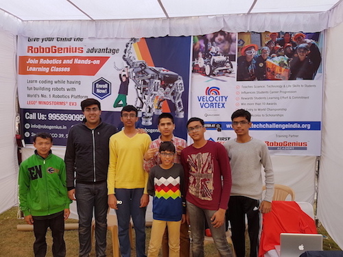

TEAM ACDC
Team ACDC is a FIRST robotics team based in Gurgaon, which is comprised of like-minded individuals who are passionate about science and mathematics. Members of Team ACDC have proudly represented India at various international competitions, such as World Robot Olympiad, FIRST Lego League and FIRST Tech Challenge.
Our mission
- To help India establish itself in the field of Science and Technology
- To provide young children with a new impression of robotics and help them get involved in the field
- To nurture our passion for robotics by interacting with experienced professionals from all around the globe
THE ROBOT

"The Dark Knight" - so called because of its eye-catching aesthetics - includes mechanisms that have been meticulously refined by the team. Its main features are:
- Holonomic drivetrain for increased maneuverability
- Extremely fast and precise particle shooter
- Highly scoring and accurate autonomous run with 90 points (+2 additional particles)
- Different strategies for autonomous to strategize with alliance partners
- Quick recapturing of beacons during endgame
OUTREACH
Fundraising

We organized separate demonstrations and fundraisers at Heritage World School Gurgaon and Ridge Valley School Gurgaon on 17/12/2016 and 24/12/2016.
In addition to raising funds for alleviating expenses related to FTC, we utilized this opportunity to get involved in the community. We interacted with various young children, who were very inquisitive about robotics and excited to get their hands on the robots we had made. It was really inspiring to see that our work had been able to engender scientific interest in the community.
We also made an online fundraising campaign on Ketto. Please consider supporting our campaign to firmly put India on the global map of innovation in Science and Technology. Any donation would be greatly appreciated!
Mentoring Robotics Teams
We introduced an FLL team "Metalloids" to the different aspects of FLL, like Core Values and Robot Design. In addition, we taught them the basics of programming and shared our experiences with them. At the end of the session, the team was able to program the EV3 Gyro sensor and had incorporated it in their robot runs.
We also mentored a robotics team from Amity International School, who were new to the Arduino platform. We provided them with the necessary resources and technical expertise to help them make a robot capable of imitating human gestures for a competition called "Odyssey of the Mind," where they stood second.
GALLERY
FTC Nationals